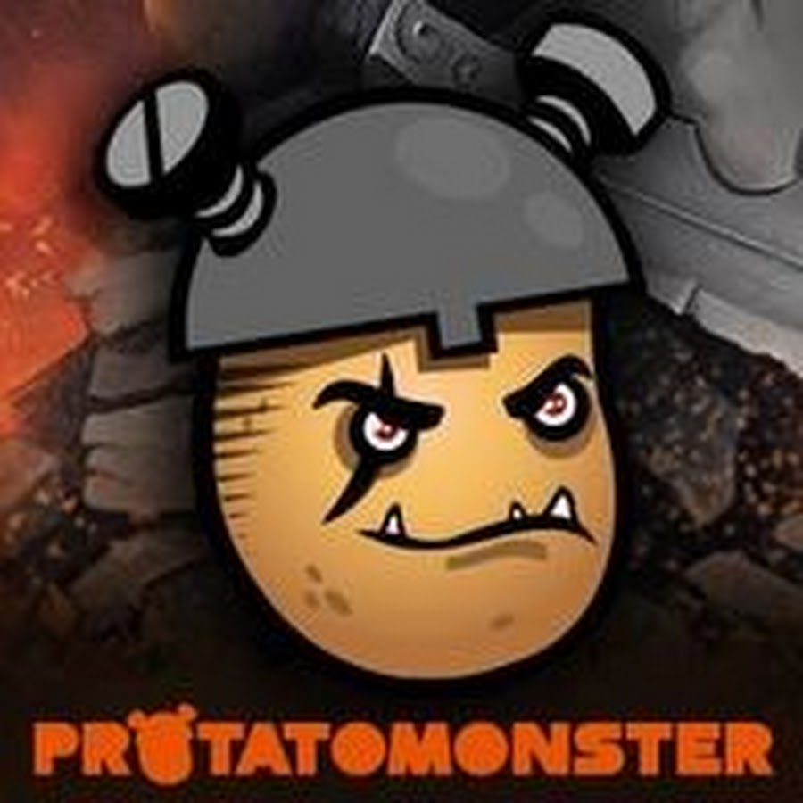

Nouvelle Vidéo de League of legends
Skyyart
Protatomonster
Guide Complet pour Progresser dans le Jeu League of Legends
1. Premiers Pas
a. Création de Compte et Choix du Serveur
Créer un Compte : Inscrivez-vous sur le site de Riot Games et téléchargez le client de jeu.
Choix du Serveur : Sélectionnez un serveur avec une bonne latence pour assurer des performances optimales.
b. Comprendre les Bases du Jeu
Objectif du Jeu : Le but principal est de détruire le Nexus de l'équipe ennemie tout en défendant le vôtre.
Carte : Familiarisez-vous avec la carte Summoner's Rift, comprenant les voies (lanes), les jungles, et les objectifs.
2. Les Rôles et les Positions
a. Rôles Principaux
Top Laner : Joue généralement sur la voie du haut, souvent des champions tanky ou bruiser.
Jungler : Patrouille la jungle, tue les monstres neutres et aide les lanes avec des ganks.
Mid Laner : Joue sur la voie du milieu, souvent des champions à haute portée ou à fort burst.
AD Carry (Bot Laner) : Joue sur la voie du bas, utilise des champions à dégâts élevés en fin de partie.
Support : Accompagne l'AD Carry sur la voie du bas, offre des contrôles de foule et des protections.
b. Positions de Jeu
Assassin : Spécialisé dans l’élimination rapide des ennemis fragiles.
Tank : Incassable en front, absorbe les dégâts pour protéger l'équipe.
Mage : Utilise des sorts puissants pour infliger des dégâts à distance.
Bruiser : Mélange de tank et de dégâts, efficace dans les combats prolongés.
3. Mécaniques de Jeu
a. Last Hitting
Last Hitting : Apprenez à tuer les sbires pour obtenir de l’or tout en évitant de pousser la lane inutilement.
b. Positionnement et Vision
Positionnement : Restez derrière vos alliés et évitez les zones dangereuses pour minimiser les dégâts reçus.
Vision : Utilisez des balises (wards) pour surveiller les mouvements ennemis et éviter les embuscades.
c. Contrôle de la Jungle
Contrôle des Camps : Faites attention aux camps de la jungle et au timing pour prendre des buffs et des objectifs importants.
4. Stratégie et Objectifs
a. Gestion des Objectifs
Tuer les Dragons et le Baron : Ces monstres offrent des bonus significatifs et des buffs pour votre équipe.
Tours et Inhibiteurs : Détruisez les tours ennemies et les inhibiteurs pour ouvrir la voie à une victoire.
b. Gestion des Vagues de Sbires
Wave Clear : Utilisez vos compétences pour éliminer rapidement les vagues de sbires et protéger vos tours.
Freeze : Conservez les vagues de sbires près de votre tour pour empêcher l’ennemi de farm efficacement.
c. Teamfights
Coordination : Communiquez avec votre équipe pour coordonner les combats d'équipe.
Focus : Concentrez-vous sur les cibles prioritaires comme les carrys ennemis ou les champions clés.
5. Build et Équipement
a. Choix des Objets
Builds Standards : Utilisez des builds recommandés pour votre champion ou ajustez-les en fonction de la situation du jeu.
Adaptation : Adaptez votre build en fonction des adversaires et des besoins de votre équipe.
b. Runes
Configuration des Runes : Choisissez des runes qui complètent le style de jeu de votre champion et la stratégie de votre équipe.
6. Amélioration Continue
a. Analyse des Parties
Replay : Regardez les replays de vos parties pour identifier les erreurs et améliorer vos stratégies.
Statistiques : Suivez vos statistiques pour comprendre vos points forts et faibles.
b. Apprentissage et Pratique
Étudier les Pros : Regardez les matchs professionnels et les streams pour apprendre des stratégies avancées.
Entraînement : Pratiquez régulièrement pour améliorer vos mécaniques de jeu et votre prise de décision.
7. Multijoueur et Communauté
a. Travailler en Équipe
Communication : Utilisez le chat et les pings pour coordonner avec votre équipe et planifier des stratégies.
Feedback : Donnez et recevez des retours constructifs pour améliorer la dynamique de l'équipe.
b. Communautés et Ressources
Forums : Participez à des forums et des communautés pour échanger des conseils et des stratégies.
Guides et Tutoriels : Consultez des guides et des tutoriels en ligne pour approfondir vos connaissances.